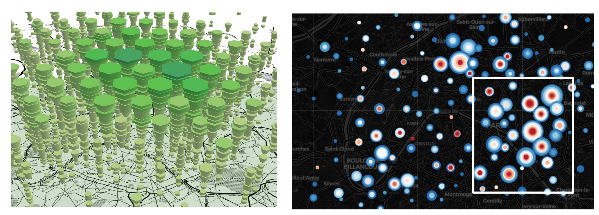
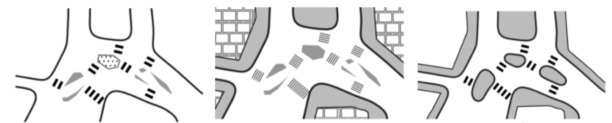
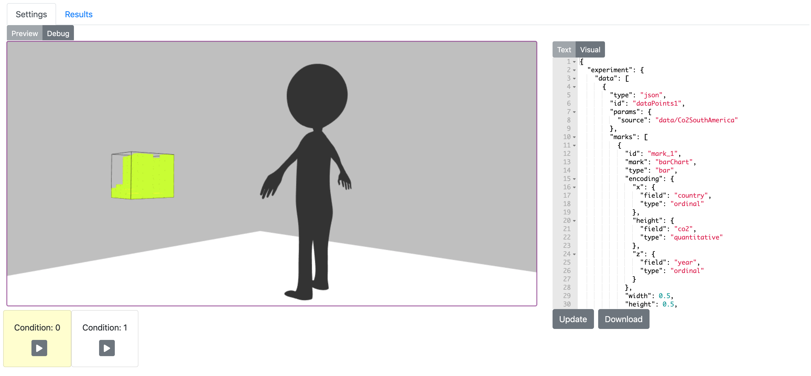
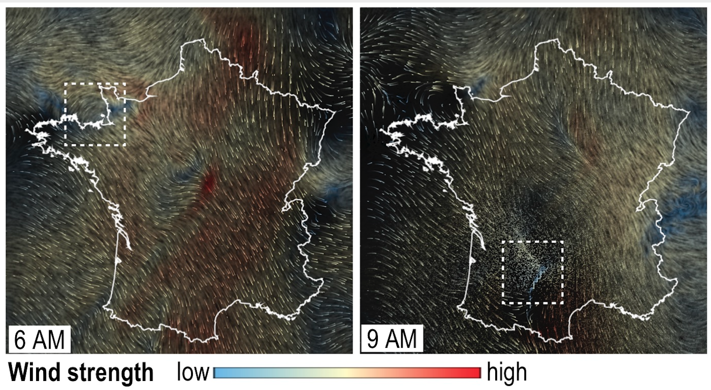
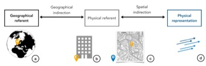
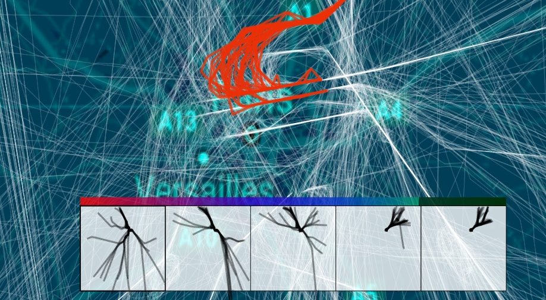

Maria Jesus Lobo
I am a research scientist (CRCN développement durable) at GeoVis team at IGN . I am currently working on augmented reality for urban visualization. Before, I was a postdoc at Devi Team working with Christophe Hurter, at ENAC where I studied new visualization and interaction techniques for spatial data, in particular LIDAR data and flow data. I did my PhD in the ILDA (Interacting with Large DAta) team under the supervision of Caroline Appert and Emmanuel Pietriga. My thesis studied interactive transitions for map applications, in order to combine different maps and data layers into one representation.
Publications
Conferences and Journals








PhD Thesis
Other
Interactive Transitions for Map Applications
In IHM DC '16: Doctoral Consortium of the 28th Conference on
Interaction Homme-Machine.
Students
PhD
Yuhao (Markie) Jiang
Cognitive model of interaction without vision for tactile
exploration of 3D maps (2020-...) (w/ Sidonie Christophe and
Christophe Jouffrais, ANR ACTIVMap)
Master and Undergraduate
Benjamin Fau
Visualisation de clusters de cas de COVID-19 au travers d’un
cube spatio-temporel (M2 Carthageo ENSG - January 2021) (w/
Jacques Gautier)
Nathan Wolff
Visualisation du vent en 3D (M2 Carthageo ENSG - January 2021)
(w/ Sidonie Christophe)
Cédric Périon
Visualisation immersive des données spatio-temporelles liées au
COVID-19 (Engineering student ENSG - June-August 2020)
Yi Nie
Realization of a toolkit for the visualization of data in
Virtual Reality (M2 IGAI U. Paul Sabatier - February-August
2019) (w/ Christophe Hurter)
Marie Pimpy
Modélisaition 3D de trajectoires d'avions pour impression 3D (M1
IHM U.Paul Sabatier - May-August 2018) (w/ Christophe Hurter)
Teaching
Data visualisation
1ere année - EIVP (2021)
Géovisualisation
M2 Carthagéo - ENSG (2021)
Interactive Data Visualization
M2 CDE - Université Bretagne Sud (2020)
Visualisation de l'information (TA)
M2 IHM - ENAC (2018,2019)
Interaction Homme Machine (TA)
3eme année - Polytech Paris Sud (2017)
Programmation d’interfaces interactives avancées (TA)
L3 Informatique - Université Paris Sud (2015, 2016, 2017)
Algorithmique Informatique Graphique (TA)
L3 Informatique - Université Paris Sud (2015, 2016, 2017)
Programming Project in HCI (TA)
M1 HCID - Université Paris Sud (2015)
Reviewing
CHI
Full Papers: 2016, 2017, 2018, 2020
Late Breaking Works: 2020
Student Research Competition: 2021
IHM
Full Papers: 2019
IEEEVIS
Full papers: 2020,2021
Short papers: 2018,2021
GraphDrawing
Full Papers: 2018
ISS
Full Papers: 2020, 2021
UCAMI
Program Commitee Member: 2018, 2019, 2022
EnergyVis Workshop
Program Commitee Member: 2020, 2021, 2023